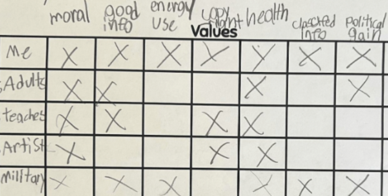
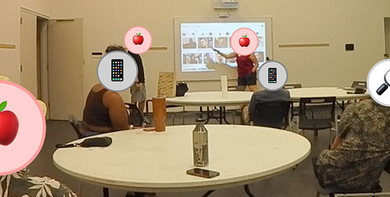

Research
Journal Papers

High School Students Building babyGPTs: Engaging in Data Practices and Addressing Ethical Issues Through the Construction of Generative Language Models
Luis Morales-Navarro, Daniel J. Noh, Yasmin B. Kafai
International Journal of Child-Computer Interaction, 2025
Conference Papers
Guide on the Side or Sage on the Stage?: Exploring the Relationship between Teachers’ Spatial and Verbal Discursive Strategies
Daniel J. Noh
In Advances in Quantitative Ethnography
(ICQE), 2025
